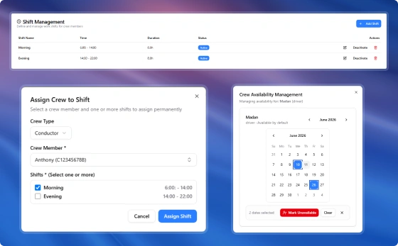
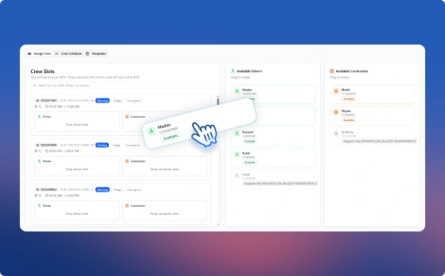
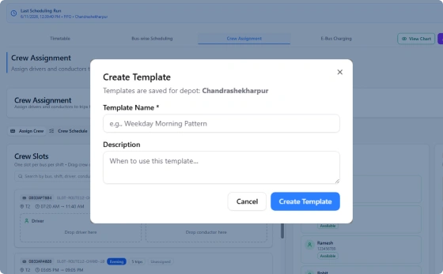

Plan rosters, assign duties, and keep your workforce compliant and well-coordinated.

See real-time crew availability before making any assignments.

Define shifts and allocate crew based on operational needs.

Apply predefined crew assignment patterns across recurring schedules.
See how PUBBS Transit brings planning, scheduling, dispatch, fleet management, and passenger services together in one connected platform.
Book a Demo